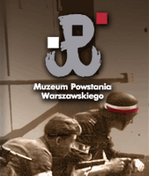
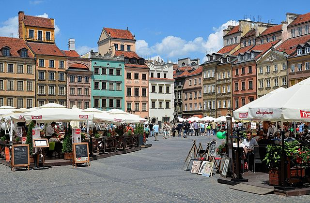

One of the highest and most recognisable building in Warsaw can be seen from almost every part of the capital. Where did it come from? It was opened in 1955 on the initiative of Joseph Stalin as a “gift of the Soviet people for the Poles”. Built by Russian workers, for a long time, it was considered to be a symbol of socialist power and the pride of People’s Poland – it was where conventions of the Polish United Workers’ Party took place. Since its very beginning, its monumental interiors have hosted numerous concerts, exhibitions, fairs and shows. Currently, the palace is home to theatres, a cinema, museums, trendy pubs and the main Warsaw Tourist Information office.
,,...a reminder of Soviet influence over the Polish People's Republic."Go up to the observation deck on the 30th floor of the building and see the beautiful panorama of the city from a height of 114 metres. Take a look at the socialist realist sculptures placed in the niches of the palace’s facade. Each symbolises a different field of science, art, technology or culture, for example a young man with a book of classical literature, a member of komsomol, an archer and a woman from Central Asia. In a direct line from the main entrance, you will find a stone honour tribune, from which the first secretaries of the Central Committee of the Polish communist party greeted those marching on the May Day parade. In summer, the area around the palace becomes the arena for numerous concerts, theatre performances and film shows. In winter, it is a great place for skating enthusiasts thanks to the free ice skating rink. At night, the building is beautifully lit, and additional decorations illuminate special occasions. The building currently serves as an exhibition centre and office complex. The Palace contains a multiplex cinema with eight screens (Kinoteka), four theatres (Studio, Dramatyczny, Lalka and 6. piętro), two museums (Museum of Evolution and Museum of Technology), offices, bookshops, a large swimming pool, an auditorium hall for 3,000 people called Congress Hall, and an accredited university, Collegium Civitas, on the 11th and 12th floors of the building. The terrace on the 30th floor, at 114 metres (374 ft), is a well-known tourist attraction with a panoramic view of the city. The Warsaw City Council and city offices are located in the building. A collection of sculptures representing figures of the fields of culture and science surrounds the Palace. Two of them are located in front of the main entrance: one of Polish astronomer Nicolaus Copernicus, by Ludwika Nitschowa, and another of Polish poet Adam Mickiewicz, by Stanisław Horno-Popławski. Four 6.3-metre (21 ft) clock faces were added to the top of the building ahead of the millennium celebrations in 2000. The clocks began working on 31 December 2000.
The Warsaw Rising Museum was opened on the 60th anniversary of the outbreak of fighting in Warsaw. The Museum is a tribute of Warsaw’s residents to those who fought and died for independent Poland and its free capital.
,,This is Poland calling. This is Warsaw calling."It covers all aspects of the Warsaw Uprising. There are exhibits over several floors, containing photographs, audio and video, interactive displays, artifacts, written accounts, and other testimonies of how life was during the German occupation of Warsaw, the uprising, and its aftermath.  There are displays dedicated to each district of Warsaw. There are many free informative leaflets and flyers (in Polish and English), including 63 calendar pages covering the dates from 1 August 1944 to 2 October 1944 – each containing a summary of the most important events that took place on that particular day of the uprising. The Uprising began on 1 August 1944 as part of a nationwide Operation Tempest, launched at the time of the Soviet Lublin–Brest Offensive. The main Polish objectives were to drive the Germans out of Warsaw while helping the Allies defeat Germany. An additional, political goal of the Polish Underground State was to liberate Poland's capital and assert Polish sovereignty before the Soviet-backed Polish Committee of National Liberation could assume control. Other immediate causes included a threat of mass German round-ups of able-bodied Poles for "evacuation"; calls by Radio Moscow's Polish Service for uprising; and an emotional Polish desire for justice and revenge against the enemy after five years of German occupation.
,,Warsaw calling all the free nations."Scholarship since the fall of the Soviet Union, combined with eyewitness accounts, has questioned Soviet motives and suggested their lack of support for the Warsaw Uprising represented their ambitions in Eastern Europe. The Red Army did not reinforce resistance fighters or provide air support. Declassified documents indicate that Joseph Stalin had tactically halted his forces from advancing on Warsaw in order to exhaust the Polish Home Army and to aid his political desires of turning Poland into a Soviet-aligned state.Scholars note the two month period of the Warsaw Uprising marked the start of the Cold War.
Warsaw's Old Town Market Place (Polish: Rynek Starego Miasta) is the center and oldest part of the Old Town of Warsaw, Poland. Immediately after the Warsaw Uprising, it was systematically blown up by the German Army. After World War II, the Old Town Market Place was restored to its prewar appearance.The Old Town Market Place is the true heart of the Old Town, and until the end of the 18th century it was the heart of all of Warsaw. It originated in the late 13th century, at the same time that the city was founded. Here the representatives of guilds and merchants met in the town hall (built before 1429, pulled down in 1817), and fairs and the occasional execution were held. The houses around it represented the Gothic style until the great fire of 1607, after which they were rebuilt in late-Renaissance style and eventually in late-Baroque style by Tylman Gamerski in 1701.  The main feature at that time was the immense town hall, reconstructed in 1580 in the style of Polish mannerism by Antoneo de Ralia and again between 1620 and 1621. The architecture of the building was similar to many other structures of that type in Poland (e.g. the town hall in Szydłowiec). It was adorned with attics and four side towers. A clock tower, embellished with an arcade loggia, was covered with a bulbous spire typical for Warsaw mannerist architecture (an example being the Royal Castle). The district was damaged by the bombs of the German Luftwaffe during the Invasion of Poland (1939). The ancient Market Place was rebuilt in the 1950s, after having been destroyed by the German Army after the suppression of the 1944 Warsaw Uprising. Today it is a major tourist attraction.